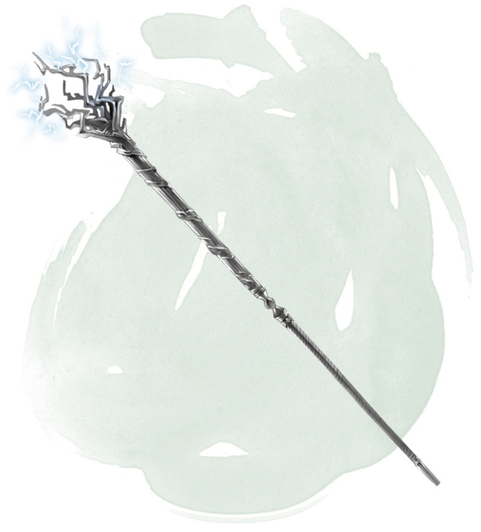

Staff of Thunder and Lightning
Staff, very rare (requires attunement)
This staff can be wielded as a magic quarterstaff that grants a +2 bonus to attack and damage rolls made with it. It also has the following additional properties. When one of these properties is used, it can't be used again until the next dawn.
Lightning. When you hit with a melee attack using the staff, you can cause the target to take an extra 2d6 lightning damage.
Thunder. When you hit with a melee attack using the staff, you can cause the staff to emit a crack of thunder, audible out to 300 feet. The target you hit must succeed on a DC 17 Constitution saving throw or become stunned until the end of your next turn.
Lightning Strike. You can use an action to cause a bolt of lightning to leap from the staff's tip in a line that is 5 feet wide and 120 feet long. Each creature in that line must make a DC 17 Dexterity saving throw, taking 9d6 lightning damage on a failed save, or half as much damage on a successful one.
Thunderclap. You can use an action to cause the staff to issue a deafening thunderclap, audible out to 600 feet. Each creature within 60 feet of you (not including you) must make a DC 17 Constitution saving throw. On a failed save, a creature takes 2d6 thunder damage and becomes deafened for 1 minute. On a successful save, a creature takes half damage and isn't deafened.
Thunder and Lightning. You can use an action to use the Lightning Strike and Thunderclap properties at the same time. Doing so doesn't expend the daily use of those properties, only the use of this one.
Lightning. When you hit with a melee attack using the staff, you can cause the target to take an extra 2d6 lightning damage.
Thunder. When you hit with a melee attack using the staff, you can cause the staff to emit a crack of thunder, audible out to 300 feet. The target you hit must succeed on a DC 17 Constitution saving throw or become stunned until the end of your next turn.
Lightning Strike. You can use an action to cause a bolt of lightning to leap from the staff's tip in a line that is 5 feet wide and 120 feet long. Each creature in that line must make a DC 17 Dexterity saving throw, taking 9d6 lightning damage on a failed save, or half as much damage on a successful one.
Thunderclap. You can use an action to cause the staff to issue a deafening thunderclap, audible out to 600 feet. Each creature within 60 feet of you (not including you) must make a DC 17 Constitution saving throw. On a failed save, a creature takes 2d6 thunder damage and becomes deafened for 1 minute. On a successful save, a creature takes half damage and isn't deafened.
Thunder and Lightning. You can use an action to use the Lightning Strike and Thunderclap properties at the same time. Doing so doesn't expend the daily use of those properties, only the use of this one.
Dungeon Master´s Guide (SRD)
